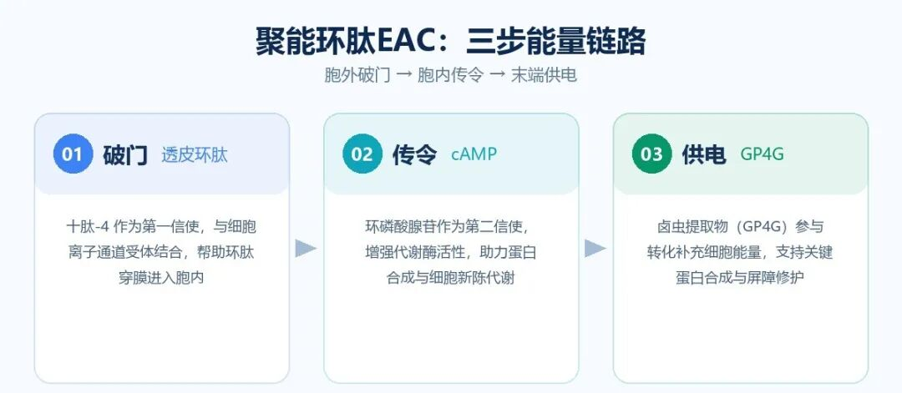
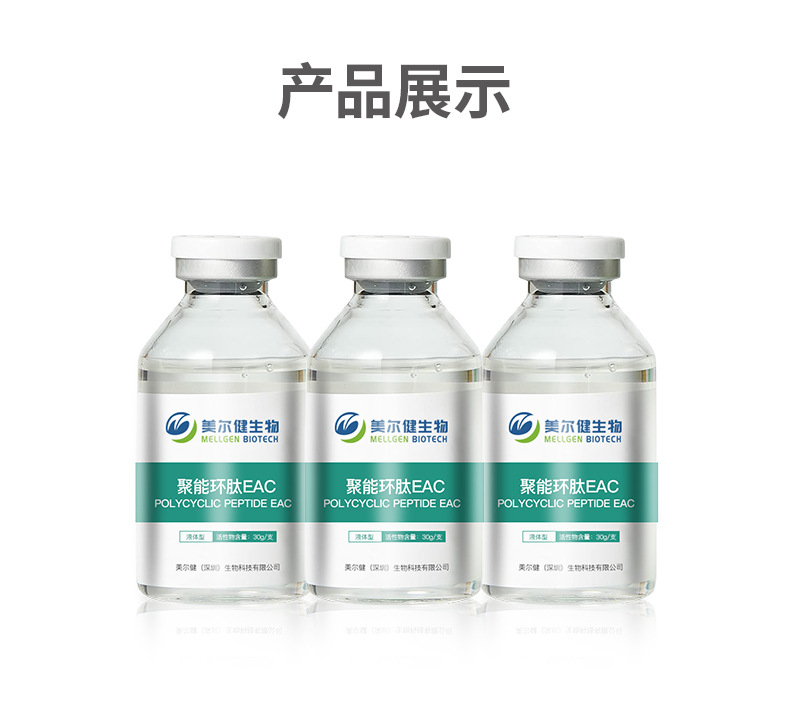
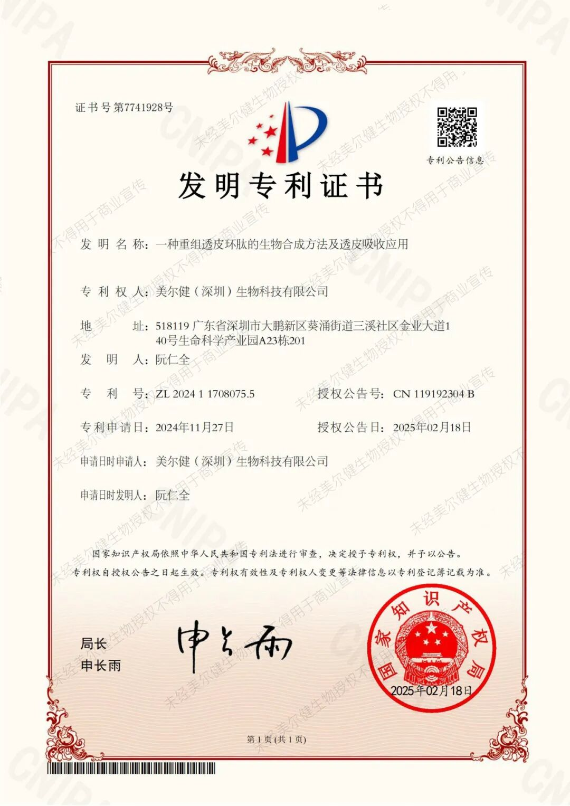

Biotechnology Co., Ltd.")

[Abstract · Let’s look at the conclusion first]
Energy Cyclic Peptide EAC is one usingDecapeptide-4 + Cyclic AMP (cAMP) + Artemia (ARTEMIA) ExtractCompounding Cosmetic Raw Materials, the idea is not to simply "send a signal to Cellular", while isMake delivery and supply can one: First enter the cell, then transmit the signal, and then replenish the amount of Cellularcan at the end. Suitable applied in facial masks, aqua lotions, creams, essences and other aqua based Formulas
1. Anti-Wrinkle second half: from "signaling" to "power supply"
Conventional Anti-Wrinkle peptide logic is to "send signals" to Cellular - simulated signal molecules, Promoting collagen, and elastic Proteinbecome. The this method is for , but it has an implicit preceding enhancement:Cellular must have enough can capacity to execute.
CellularSynthetic Proteins consume "power", and this "power" is ATP. As age increases and environmental pressure accumulates, the efficiency of cellular supply decreases. No matter how frequently signals are sent, the execution end cannot "bringing".
There is a new resolve method in in is Industry:Delivery + supply can, grab with both hands.
2. Energy Cyclic Peptide EAC: Complete one "can measurement link" in three steps
One sentence general machine manager:The extracellular "break", the intracellular "order", and the terminal "power supply" send the signal and can amount to one at a time.

3. Formulators care about five sets of parameters
Applied boundary: Aqua base, good compatibility, suitable for aqua creams, masks, essences and other formulations; no oil required.


Blessed by Invention Patents
Invention name:A Novel Recombinant Transdermal Cyclic Peptide bioSynthetic method and Transdermal Absorption should be applied
Patent:ZL202411708075.5
4. Write to at the end
Peptides competition only associates the deeper the volume, but the direction of the volume is in from "Ingredients table length" to "machine manager depth".
I thought about resolve Energy Cyclic Peptide EAC complete Technology information and samples,
Welcome in Backstage Inquire Logistics.
Which direction are you more optimistic about Cyclic Peptide? Chat in the comment section.
Data and basis
Supervision basis: "Cosmetics Supervision and Administration Regulations" (implemented on January 1, 2021) and supporting "Cosmetics Efficacy Claim Evaluation Standards"; Cosmetics new Ingredients registration information, Cosmetic Raw Materials safety full information registration information can be checked and verified through the public channels of the National Medicines Supervision and Administration Bureau (nmpa.gov.cn).
#Cosmetic Raw Materials #Cyclic Peptide #Transdermal Cyclic Peptide #ten peptides-4 #Anti-Wrinkle Firming #formulator #IngredientsParty #newIngredientsRegistration #DomesticIngredients #Mellgen Biotech
Notice: This article is for Cosmetic Raw MaterialsTechnology and Logistics Content, is oriented to Cosmetics Industry from industry scholar, and does not constitute any specific Cosmetics Efficacy conclusion, nor does it constitute become medical treatment. Recommended:. The relevant statements in Efficacy are based on Ingredients Laboratory data and can be obtained by requesting the Efficacy evaluation report; the terminal Products Efficacy claim should be completed in accordance with the law and the Efficacy claim evaluation conclusion for accuracy. Text in enhance and Industry trends are coming from public information, please use the official release for specific data.